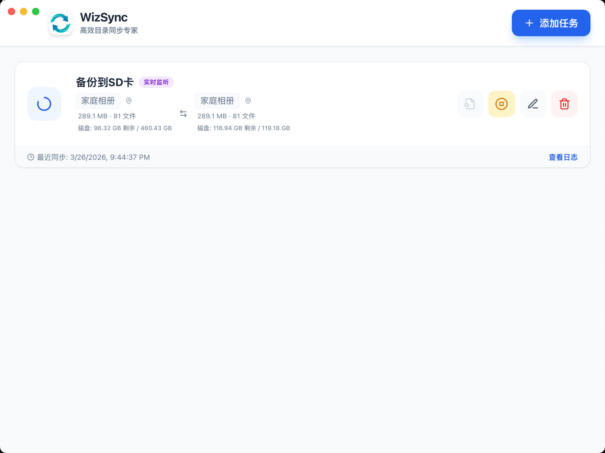

WizSync 是一款基于 Electron 和 Unison 构建的专业级目录同步工具。 为开发者和专业用户提供极其稳定、实时且可视化的本地/跨磁盘目录同步解决方案。

温馨提示：
在 MacOS 系统下安装出现权限问题，请在终端执行以下命令：
sudo spctl --master-disable # 允许任何来源
xattr -d com.apple.quarantine /Applications/WizSync.app # 移除隔离属性
注意⚠️：移除隔离属性会绕过 macOS 的安全检查，仅对完全信任的文件使用此命令，避免运行恶意软件。
精心设计，只为更流畅的同步体验
基于成熟的 Unison 算法，智能识别双向修改，安全处理文件冲突。
利用 Chokidar 毫秒级捕获文件变动，实现“修改即同步”的无感体验。
实时查看状态与进度，详尽的统计信息，图形化的文件差异对比 (Diff)。
按任务、按日期自动分割日志。支持日志自动轮转，一键跳转日志文件夹。
通过托盘图标快速监控正在运行的任务，无需打开主窗口即可掌控全局。
内置路径重复与嵌套检查，防止配置错误导致的同步回环或文件损坏。